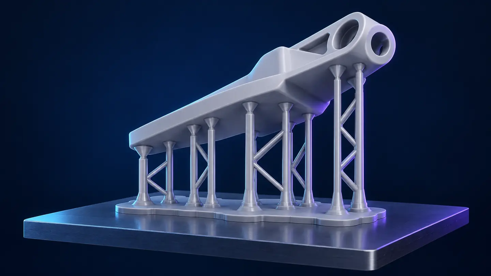
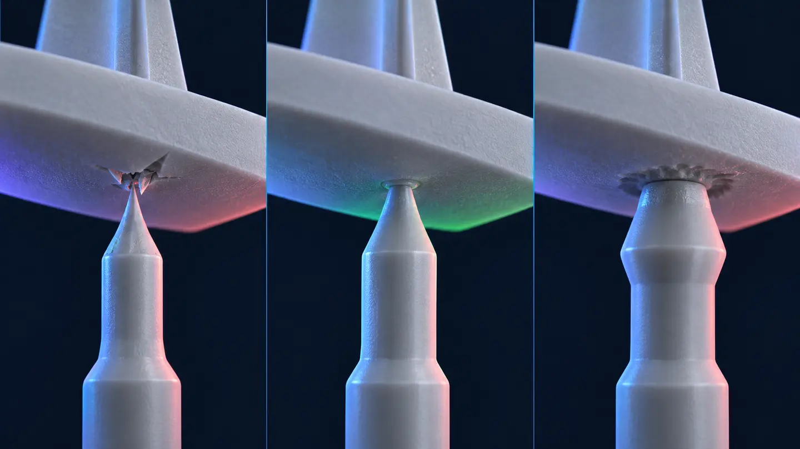
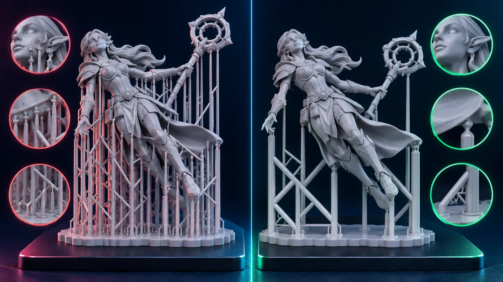
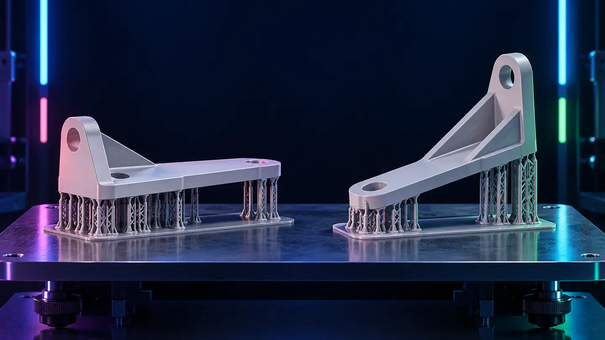

Primeira ilha
Localize o primeiro pixel de cada componente que nasce sem ligação com a camada anterior.
Construa um caminho de carga confiável sem sacrificar acabamento e precisão.
Em impressão bottom-up, cada camada precisa sobreviver à separação do filme, ao crescimento da área projetada, à flexão e ao braço de alavanca da geometria. Um suporte funcional liga a primeira região impressa a uma base estável, controla o movimento lateral e mantém detalhes na posição até o final do ciclo.
Localize o primeiro pixel de cada componente que nasce sem ligação com a camada anterior.
Observe onde a área de uma camada cresce bruscamente; a carga aumenta antes de a peça ganhar rigidez.
Extremidades longas podem girar ou vibrar mesmo quando não aparecem como ilha.
Marque encaixes, margens, textos e superfícies estéticas antes de escolher os contatos.
O mapa de ângulos mostra candidatos geométricos. A decisão correta vem do preview camada por camada: continuidade, tamanho da seção, rigidez e distância até o apoio. Não existe um ângulo universal que resolva todas as peças.

É a interface com a peça. Precisa segurar a região sem penetrar ou marcar além do aceitável.
Transfere a carga do contato para a haste. Uma ponta adequada em conexão fraca ainda rompe.
Resiste à tração e à flexão. Comprimento livre e inclinação importam tanto quanto o diâmetro.
As diagonais reduzem vibração, flambagem e deslocamento lateral de hastes longas.
Ancora cada haste ao raft ou à plataforma sem criar uma conexão frágil no pé.
Integra as bases e facilita aderência e remoção. Não corrige exposição de base mal calibrada.

A ponta rompe ou solta da peça. Antes de engrossar, confirme exposição, primeira ilha e flexão da haste.
A região permanece estável, o suporte pode ser removido de modo controlado e a marca atende ao acabamento.
A remoção arranca material ou deixa cratera. Reduza somente uma variável e revalide a sustentação.
Use um cupom com orientação, seção e altura próximas da peça real. Mude apenas diâmetro ou profundidade por rodada, nunca os dois juntos. Registre retenção, marca após remoção e repetibilidade antes de salvar o perfil.
Os nomes mudam entre versões do Chitubox e do Lychee, mas a função mecânica permanece.
| Parâmetro | Função | Ao aumentar | Ao reduzir |
|---|---|---|---|
| Diâmetro do contato | Define a área que toca a peça. | Eleva retenção e tende a ampliar a marca. | Preserva acabamento, mas pode romper. |
| Profundidade do contato | Define quanto a ponta entra na malha. | Eleva ancoragem e risco de cratera. | Facilita remoção e pode soltar cedo. |
| Diâmetro superior | Dimensiona a conexão logo abaixo da ponta. | Reduz quebra na transição. | Cria um pescoço mais fácil de romper. |
| Comprimento da conexão | Liga o contato à haste principal. | Aumenta alcance, mas também flexão. | Enrijece a ligação e limita o alcance. |
| Forma do contato | Controla a transição geométrica com a peça. | Não se aplica isoladamente. | Compare formas em cupom; não escolha por aparência. |
| Parâmetro | Função | Risco de excesso | Risco de falta |
|---|---|---|---|
| Diâmetro da haste | Controla rigidez e resistência do corpo. | Mais consumo e remoção congestionada. | Flexão, flambagem ou ruptura. |
| Inclinação da haste | Permite alcançar o contato a partir da base. | Amplia componente lateral e flexão. | Pode obrigar bases em áreas ruins. |
| Comprimento livre | Distância sem travamento entre base e contato. | Aumenta movimento lateral. | Pode gerar estrutura densa sem necessidade. |
| Travessas | Conectam hastes e controlam deslocamento. | Dificulta acesso, lavagem e remoção. | Permite vibração e giro do conjunto. |
| Pilar curto | Apoia regiões próximas de outra superfície. | Pode unir áreas e prender resina. | Deixa detalhe local sem apoio. |
| Parâmetro | Função | Como avaliar |
|---|---|---|
| Base da haste | Transfere a carga da haste ao raft ou plataforma. | Não deve separar, tombar nem criar um pé difícil de remover. |
| Área do raft | Integra suportes e distribui a aderência. | Precisa cobrir o conjunto sem virar uma placa desnecessariamente grande. |
| Espessura e borda | Dão rigidez e acesso à espátula. | A borda deve permitir remoção sem curling ou esforço perigoso. |
| Grade ou alívio | Pode reduzir material e melhorar escoamento. | Não deve criar copos fechados, zonas frágeis ou bolsões de resina. |
O mesmo contato muda de comportamento com resina, exposição, altura de camada, orientação, comprimento da haste e área por camada. Use os perfis do fatiador como candidatos de teste, não como garantia universal.
| Função | Onde entra | O que precisa entregar | Erro comum |
|---|---|---|---|
| Estrutural | Primeira ilha, começo da massa principal e grandes mudanças de seção. | Caminho rígido e contínuo até o raft. | Usar ponta forte em haste longa sem travamento. |
| Estabilização | Extremidades, braços de alavanca e regiões com tendência a girar. | Controle lateral em conjunto com a estrutura principal. | Esperar que um suporte lateral carregue toda a peça. |
| Detalhe | Dedos, pontas, fios, dentes, bordas e microilhas relevantes. | Manter a forma local com a menor marca validada. | Usar contato leve antes de criar a sustentação estrutural. |


Pode criar grande área simultânea, bordas suspensas extensas e deformação entre contatos.
Uma inclinação bem escolhida inicia em região controlada e aumenta a seção sem saltos bruscos.
Defina furos de drenagem e ventilação antes dos suportes. Suporte interno só é aceitável quando pode ser removido ou completamente limpo e curado; caso contrário, ele pode aprisionar resina e dificultar a inspeção.
Use luvas compatíveis e proteção ocular ao manipular peças ainda contaminadas. Corte sempre para longe das mãos. Não aqueça a peça nem use água quente para soltar suportes sem autorização da ficha técnica: calor pode deformar e alterar dimensão.
| Evidência | Leitura provável | Primeira correção |
|---|---|---|
| Raft e hastes impressos, peça ausente | Ruptura na interface ou primeira região sem caminho suficiente. | Localize a altura da separação e reforce primeiro contato, conexão e estabilidade local. |
| Pontas rompem em alturas parecidas | Contato ou conexão superior abaixo da carga daquela seção. | Ajuste uma variável do topo e repita com a mesma orientação. |
| Peça ondula entre contatos | Vão grande, seção fina ou abertura rápida da área. | Reoriente ou redistribua contatos nas bordas de crescimento. |
| Conjunto inclina ou vibra | Hastes longas sem travamento ou alavanca lateral elevada. | Adicione estabilização e diagonais antes de engrossar todas as pontas. |
| Marcas profundas e lascas | Contato excessivo, remoção inadequada ou cura incompatível. | Revise a sequência de remoção e reduza uma variável do contato. |
| Raft levanta em uma borda | Problema de base, nivelamento, área inicial ou concentração de carga. | Corrija a base separadamente; aumentar suportes na peça não resolve a origem. |
| Falha sempre na mesma coordenada XY | Indício de tanque, filme, tela, sujeira ou plataforma naquela zona. | Mude a posição do teste e inspecione o equipamento antes de editar suportes. |
Selecione a evidência e gere uma orientação. Confirme sempre no equipamento.
Aprove o conjunto quando ele repetir a peça completa, dentro da tolerância e com acabamento aceitável. Uma impressão que “deu certo por sorte” ainda não é um perfil.